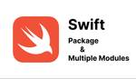

stmn tech blog
https://tech.stmn.co.jp/
stmn tech blog
フィード

TUNAG iOSアプリをマルチモジュール化しました 2
2
stmn tech blog
こんにちは、株式会社スタメンでiOSエンジニアをしている青木 (@38Punkd)です。 弊社iOSアプリチームは、開発人数が増えるにつれて、コンフリクト頻度が増えることに悩まされていました。 またアプリの機能も増え、機能や画面間の依存関係が複雑になりつつあり、開発生産性を下げる要因になっていました。 今回この問題を解消するためにマルチモジュール化を行いましたので、その概要をご紹介できればと思います。 マルチモジュール化とは？ アプリのコードを、複数の独立したモジュール(単位)に分割することを指し、アプリの開発や保守を楽にするための手法です。 マルチモジュール化を進めることで、大規模なアプリを…
7日前

SentryでRailsアプリケーションのエラー監視を始めました
stmn tech blog
最近、TUNAGの新たなエラー監視ツールとしてSentryを導入しました。本記事では、Railsアプリケーションに対するSentryの導入事例について紹介します。
1ヶ月前
TUNAGのDBをAurora MySQL v3にアップグレードしました
stmn tech blog
TUNAGのメインデータベースをAmazon Aurora MySQL v2(MySQL5.7互換)からv3(MySQL8.0互換)にアップグレードしたので、その検証内容などアップグレード完了に至るまでの過程を共有します。
4ヶ月前
Kaigi on Rails 2023 スポンサーブースクイズの解説
stmn tech blog
こんにちは、エンジニアの @natsuokawai です。 先日開催された Kaigi on Rails 2023 にて、スタメンとしてスポンサーブースを出展しておりました。 遊びに来てくれた皆さんありがとうございました！ スタメンのブース その際 Ruby on Rails に関するクイズを出題していたので、本記事ではそれらの解説を簡単にしたいと思います。 問題1 以下のコードを Rails 6.1 以前で実行した時の結果は？（Task は ActiveRecord オブジェクト、id は integer 型のカラムとする） task1 = Task.create(title: "Task …
5ヶ月前
スタメンは Kaigi on Rails 2023 にRubyスポンサーとして初協賛します
stmn tech blog
株式会社スタメンは、2023年10月27日、28日の2日間、浅草橋ヒューリックホールにて開催される「Kaigi on Rails 2023」に、Rubyスポンサーとして協賛し、ブース出展などを通してイベントを盛り上げます。 kaigionrails.org TUNAGの開発では 2017年のサービス提供開始当初から Ruby on Rails を採択してきました。 直近では、10月6日にリリースされた Rails 7.1 への移行を当日中に完了するなど、スピード感を持って Rails での開発に取り組んでいます。 本エントリーでは、そんな我々がこの度の Kaigi on Railsに初協賛する…
5ヶ月前
Rails 7.1 リリース後 1.5 時間での移行と今後
stmn tech blog
こんにちは、スタメンの @natsuokawai です。 今日は Rails World 2023 @アムステルダム の Day 2 ですね。 X（Twitter）のポストを見ていても現地の熱が伝わってきて、私も来年の Rails World にはぜひ参加したいと感じています。 さて、そんな Rails World の開催中、10月5日の日本時間の17時過ぎに、Rails の最新バージョン 7.1 が公開されたことを知ります。 その時点ですでに弊社のサービスTUNAG（ツナグ）も Pre-release バージョンでリリース準備を進めていたところでしたので、発表のタイミングに戸惑いながらも、無…
6ヶ月前
エンジニアサマーインターンシップ 2023 実施レポート
stmn tech blog
こんにちは、CTO室 エンジニアHRチームのがせ（@gasekao96）です。 スタメンでは、"Expand your Horizon."をテーマに8月と9月にそれぞれ2週間のエンジニアサマーインターンを実施しました。 インターンには合計8人のメンバーが実際の開発チームに参加。 MacBook Air M2 24GB、32インチ 4Kモニター、各自が希望するマウス/トラックパッド、ハーマンチェアーなどの開発デバイスが貸与され、社員と同じ環境で、そしてプロダクションコード上で開発タスクに取り組みました。 本エントリーでは、プログラムの内容と参加した学生の感想をご紹介します。 インターン初日 初日…
6ヶ月前
ドメイン駆動設計は何を解決する手法なのか
stmn tech blog
こんにちは、リファクタリング大好きなミノ駆動です。 株式会社スタメンでは、企業エンゲージメント構築サービスTUNAG（ツナグ）の技術的負債解消と今後の持続的成長のため、ドメイン駆動設計(DDD)の導入を検討しています。 ところでDDDはとかく理解しづらく、何のためのDDDなんだという議論になりがちです。この記事では、DDDの真の主人公コアドメインを中心に、DDDが何を解決するものなのか、全体像を改めて整理します。 この記事で扱う内容 DDDが解決したい課題と解決方法の全体像。 この記事では扱わない内容 設計パターンの実例などの実装詳細。 大事な前提 〜利益を得るためのサービス開発 会社でのサー…
6ヶ月前
TUNAG の Rails バージョンが 7.0 になりました
stmn tech blog
プラットフォーム部 DevEx チームの河井です。 8月に弊社サービス TUNAG（ツナグ）で使っている Ruby on Rails のバージョンを 6.1 から 7.0 に上げたので共有します。 やったこと 一般的なバージョンアップのフローについては多くの記事がありますので、ここでは影響が大きかった仕様変更の対応方法について紹介します。 フォーマット指定なしの to_s to_s にフォーマットを渡すことが非推奨化されました。 この変更により、引数なしの to_s の挙動が変わってしまう問題がありました。 そこで、影響を受けるクラスについて to_s をオーバーライドし、フォーマットがこれま…
6ヶ月前
DroidKaigi 2023にスポンサーとして参加しました！
stmn tech blog
今回スタメンは9月14日からベルサール渋谷ガーデンで３日間開催されたDroidKaigiに初めてスポンサーとして参加をしました。本ブログではイベントの様子やスポンサーブースの様子をレポートしていきます。 開発部モバイルアプリGでAndroidアプリ開発をしているカーキ(@khaki_ngy)です。 スタメンとしてのスポンサーだけでなく、自分個人としてもオフラインでのDroidKaigiに参加するのは初めてだったので、その点での感想も含めてレポートしていきたいと思います！ スポンサーブースについて ブースの様子 今回、スポンサーブースではAndroidのロゴを当てるクイズを実施しました。 トラン…
6ヶ月前
iOSDC Japan 2023 にスポンサーとして参加しました！
stmn tech blog
全員での集合写真 こんにちは！普段はTUANG Androidアプリを開発をしているカーキ（@khaki_ngy）です。 先日、早稲田大学西早稲田キャンパスで開催されたiOSDCにスポンサーとしてスタメンが参加しました。 そんなiOSDCの様子をレポートしていきたいと思います🔍 ididblog！！ iOSDCとは、年に一度開催されるiOS開発最大のカンファレンス（お祭り）です。 今年はオフラインの参加人数制限も解除され、非常にワイワイした雰囲気で開催されていました。 会場の雰囲気 会場ではセッションブースのほか、ポスターセッションやアンカンファレンス、スポンサーブースなどがあり、参加者同士の…
6ヶ月前
スタメンは DroidKaigi 2023 にゴールドスポンサーとして協賛します
stmn tech blog
株式会社スタメンは、2023年9月14日から16日までの3日間、ベルサール渋谷ガーデンとオンライン配信にて開催される「DroidKaigi 2023」に、ゴールドスポンサーとして協賛し、イベントを盛り上げます。 2023.droidkaigi.jp 本エントリーでは、スポンサーブース、ノベルティ、フライヤーについてご紹介いたします。 スポンサーブースのご紹介 オフライン会場のスポンサーブースは、スタメンカラーのテーブルクロス、バナースクリーン、のぼり旗が目印です。 会場内で会話のネタになるようなコンテンツをご用意しています。エンジニアメンバーもブースに立ちますので、会場に来られる方はぜひお立ち…
7ヶ月前
VIPERアーキテクチャ採用のTUNAG iOSアプリにSwiftUIを導入しました
stmn tech blog
アイコンの出典：https://icons8.com こんにちは、株式会社スタメンでiOSエンジニアをしている青木 (@38Punkd)です。 先日の投稿にあった通り、スタメンは iOSDC Japan 2023 にゴールドスポンサーとして協賛します。私はそのスポンサーセッション枠として登壇します。この記事では、当日発表する内容を少し先出ししてご紹介できればと思います。 fortee.jp 私たちは TUNAG というプロダクトを、Web・iOS・Androidの3プラットフォーム上で提供しています。iOSアプリではVIPERアーキテクチャを導入しています。具体的な導入方法については、弊社で以…
7ヶ月前
TUNAGの新フロントエンドを支える技術と設計
stmn tech blog
株式会社スタメンでフロントエンドエンジニアをしている神尾です。普段は、エンゲージメントプラットフォーム「TUNAG」の開発をしています。 TUNAGでは、2023年1月からWebフロントエンドのリプレイスプロジェクトが始まり、今もプロジェクトが進行中です。現在のWebフロントエンドでは技術選定の選択肢が多く、選定にあたっての検討事項がとても多いと思います。 この記事では、リプレイスの際に採用した技術の選定理由や設計についてまとめたので、この記事を通して、読んでくださった方のお役に立てれば嬉しいです。 また、リプレイスの背景やインフラについては別記事になっているので、そちらもご覧ください。 te…
7ヶ月前
TUNAGのフロントエンドを段階的にリプレイスしている背景とインフラ構成
stmn tech blog
こんにちは、スタメンの手嶋、西川です。 普段はエンゲージメントプラットフォーム「TUNAG」の開発をしています。 プロジェクトの背景 技術構成・選定 リプレイス前 リプレイス後 構成変更における注意点 1. 意図せず情報がキャッシュされてしまうリスク 2. ダウンタイム発生のリスク リプレイスのフロー 振り返り 最後に プロジェクトの背景 これまでTUNAGは、プロダクトの成長に注力してきた一方で、内部品質や開発効率などに関する課題の解消が後手にまわっていました。 TUNAGが成長軌道に乗ってきた中で、エンジニア組織を拡大させつつ、継続的にプロダクトの価値を素早く世の中に届けていくためには、開…
7ヶ月前
なぜTUNAG(ツナグ)がモバイルアプリに投資するのか
stmn tech blog
こんにちは、プロダクト開発部、モバイルGでiOSチームのエンジニアリングマネージャをしている 朝倉（@asashin227)です。 2022年末にスクラム体制でのモバイルアプリGの変遷（2022年）という記事を公開してから８ヶ月ほど経ち、さまざまな変化がありましたので、ご紹介できればと思います TUNAG(ツナグ)について 2022年2月に以下の記事でスタメンの主力事業であるTUNAGの紹介をしました。 2023年の8月時点において昨年時点で見えていなかった部分の解像度が上がってきたため、改めてTUNAGについて紹介したいと思います。 tech.stmn.co.jp TUNAG(ツナグ)は、エ…
8ヶ月前
スタメンは iOSDC Japan 2023 にゴールドスポンサーとして協賛します
stmn tech blog
株式会社スタメンは、2023年9月1日から3日間にわたり、早稲田大学理工学部 西早稲田キャンパスとニコニコ生放送上で開催される「iOSDC Japan 2023」に、ゴールドスポンサーとして協賛し、イベントを盛り上げます。 iosdc.jp 本エントリーでは、登壇情報、ノベルティ、出展ブースについてご紹介いたします。 登壇情報 スポンサーセッションでは、iOSエンジニアの青木が『VIPERアプリにSwiftUIを導入したら、View層の責務がより分離できた話』というテーマで話します。 登壇者のコメント： 導入したいとずっと思っていたSwiftUIを、弊社プロダクトの環境下でどうやったら導入でき…
8ヶ月前
和田卓人(t_wada)さんをお呼びして「質とスピード」の社内講演をしていただきました！
stmn tech blog
こんにちは、スタメンCTOの松谷(@uuushiro) です。 7/25に、 和田卓人さん (以下、t_wadaさん)をお呼びし、「質とスピード」の社内講演会を開催しました！ t_wadaさんにご依頼したきっかけ スタメンが提供する「エンゲージメントプラットフォーム TUNAG(ツナグ)」はスタメンの創業事業で、サービス提供から約7年が過ぎました。この約7年間、プロダクト成長に注力してきた中で、内部品質や開発効率などに関する課題が後手に回っていました。 TUNAGが成長軌道に乗ってきた今、今後もエンジニア組織をスケールさせながら、継続的にプロダクトの価値を素早く世の中に届けていくために、開発者…
8ヶ月前
なぜ雑談が重要か
stmn tech blog
これはなに？ こんにちは、リファクタリング大好きなミノ駆動です。2023年7月より株式会社スタメンにジョインしました。 コミュニケーションには会議体やテキストベースなど様々な手段があります。 その中で雑談がなぜ重要であるかについて、私の考えを記したものです。 大事な前提 〜目的と手段の関係〜 人々の活動には目的があります。そして目的を満たすための手段を追い求めています（ここでいう手段とはシステムであったり情報であったり、「目的の役に立つもの」と考えてください）。 目的と手段の関係性を次の図で表現します。目的と手段それぞれの円の重なりが大きいほど、目的に対して相応しい手段である、ということをここ…
8ヶ月前
スタメンの技術的負債解消戦略
stmn tech blog
1. これはなに こんにちは、リファクタリング大好きなミノ駆動です。2023年7月より株式会社スタメンにジョインしました。 この記事は、今後スタメンにおいてサービスの技術的負債を解消する設計戦略についてまとめたものです。 2. 背景、課題 株式会社スタメンは2016年創業。主要サービスであるTUNAG（ツナグ）は、企業のエンゲージメントの構築、つまりお互いを知って理解し、信頼し合う組織を作るための社内コミュニケーションを活性化させるプロダクトです。TUNAGのバックエンドはRuby on Railsで開発され、ローンチから7年をむかえつつあります。 これまでTUNAGは、プロダクトをいかに伸ば…
8ヶ月前
SwiftのCombineを、RxSwiftとの違いを理解しながら導入する
stmn tech blog
こんにちは、株式会社スタメンでTUNAGのiOSアプリエンジニアをしている青木 (@38Punkd)です。 何気に今回の記事がこの Tech Blog への初投稿で、ワクワクしています。 TUNAGのiOSアプリは、これまでリアクティブプログラミングの手法として、RxSwiftを導入してきました。 そして今年度から、アプリがサポートするOSバージョンの下限を13.0に引き上げたため、Apple公式の非同期フレームワークCombineが使えるようになりました。 アプリに対してサードパーティ製のライブラリであるRxSwiftへの依存度を下げたかったことと、純粋に新しい技術を試してみたいという好奇心…
9ヶ月前
TUNAGで利用しているAWS LambdaでRuby 3.2 runtimeに爆速対応した
stmn tech blog
アーキテクチャ図（完了後） こんにちは。当社がスポンサー参加したRubyKaigi 2023が終わって1ヶ月以上経ち、6月は海外カンファレンスも多く忙しい日々を過ごしています。 最近はまたTUNAG全般をいじっています。 TUNAGのメインアプリ（Ruby on Railsベース）は4月にRuby 3.0へのアップグレードしたのち、5月前半にはRuby 3.1へのアップグレードが完了していました（ブログ記事なし）。執筆時点では、Ruby 3.2へのアップグレードは進行中との噂です。 2019年6月開催の名古屋Ruby会議04でもご紹介した通り、コンテナ基盤で動くRubyベースサービスとは別に、…
9ヶ月前
RubyKaigi 2023 参加レポート
stmn tech blog
はじめまして、stmnで働いている@natsuokawaiと@starmiya_miyukiです。 stmnはRubyKaigi 2023にゴールドスポンサーとして協賛させていただいたので、エンジニア2人でRubyKaigi 2023にオフラインで参加してきました！ スポンサーブースの様子 どのセッションも興味深かったのですが、本レポートでは特に社内でも話題に上がることの多い型関係の5つのセッションについてまとめてみます。 Day1 Generating RBIs for dynamic mixins with Sorbet and Tapioca rubykaigi.org Slide: h…
10ヶ月前
TUNAGにおけるRuby 3.0アップデートと開発組織の今後
stmn tech blog
はじめまして。2023年4月ごろよりスタメン・TUNAGプロダクト開発にジョインしました、@trowems23です。 つい先日Ruby 3.0がリリースされました。ジョイン初日から数えて829日前のことでした。 Rubyは開発生産性が高いのですが、ブレイキングチェンジの多さに対してライフサイクルがとても短く、積極的なアップデートが求められます。 一方で、スタメン主要プロダクトのTUNAGのコアアプリでのRubyバージョンは2.2から始まり、2.3、2.5と推移して、最後のマイナーアップデートは2021年3月の2.7.2でした（その日時点でのRuby最新バージョンは3.0.0, 2.7.2）。 …
1年前
漏洩チェッカーの技術と開発体制のすべて
stmn tech blog
スタメンエンジニアの井本です。 漏洩チェッカーのWebアプリケーションをフルスタックに領域問わず開発しています。得意な領域はインフラ含むバックエンドです。 本記事では、先月2022年12月にリリースしたサービス、漏洩チェッカーについて、プロダクトと開発体制の紹介をします。 漏洩チェッカーについて 技術について 技術スタック アーキテクチャ 組織について 組織体制 開発体制 まとめ 漏洩チェッカーについて 漏洩チェッカーは情報漏洩を未然に防ぐセキュリティ管理サービスです。 企業にとってセキュリティ事故の影響は甚大であり、近年、情報の漏洩事故の件数は年々、増加の傾向にあります。 情報資産に関するセ…
1年前
RSGT2023に参加してきました
stmn tech blog
2023年1月11日(水)〜1月13日(金)に開催された、スクラムの国内最大のイベントであるRegional Scrum Gathering Tokyo 2023(以下: RSGT)にスポンサーとして参加してきたのでその報告です。 2023.scrumgatheringtokyo.org 今回はCTO＋エンジニア兼スクラムマスター×3人の4人で参加してきました。 会場の雰囲気 会場に入るとスポンサーブースが出展しているエリアがあるのですが、ブースの周りやセッション会場の外など、会場の至るところで話し合いをしているのが印象的でした。 初参加だと入場パスに"First Timer"というシールを付…
1年前
大規模スクラム LeSS の各スクラムチームに「チームPO制」を導入してみた
stmn tech blog
こんにちは！株式会社スタメン/TUNAG事業部プロダクト開発部の手嶋/西川/若園です。 弊社のプロダクト部では2022年から大規模スクラム LeSS(以下: LeSS)を導入しています。 その中で私たち3人は、チームプロダクトオーナー(以下：チームPOと呼ぶ)という通常ではLeSSに定義されていない役割を担って様々なことにチャレンジしてきました。 今回のブログでは、実際にチームPOとしてどのように活動をしてきたのかを紹介しながら、チームPOがスクラムにいるメリットや苦労した点を書いていきたいと思います。 LeSSとは 前提として、LeSSとは何かご紹介します。 (引用元：大規模スクラム Lar…
1年前
スケルトンスクリーンを小さく導入してみた
stmn tech blog
目次 はじめに スケルトンスクリーンとは react-content-loaderによる実装 プリセットを使用する方法 Create React Content Loaderで独自のスケルトンスクリーンを作成し使用する方法 おわりに はじめに はじめまして、株式会社スタメンの神尾です。 普段はスクラムマスター兼エンジニアとして弊社が運営しているエンゲージメントプラットフォームTUNAGを開発しています。 2022年10月末にTUNAG内のチャットに『タスク管理』機能を追加リリースし、タスク一覧のローディングUIとしてTUNAGで初めてスケルトンスクリーンを導入しました。 そこで今回はスケルトン…
1年前
インペディメントリスト 〜スクラムチームの一番重要な問題を改善し続ける方法〜
stmn tech blog
目次 はじめに インペディメントリストとは 運用方法 インペディメントリストの効果 運用する上で課題となったこと インペディメントリストをもっと活かすために今後やりたいこと さいごに はじめに はじめまして、株式会社スタメン TUNAG事業部 プロダクト開発部 西川、神尾、小松、村中です。 スタメンでは2022年の2月からスクラムを導入しており、私たちはスクラムチームの「チームおでん🍢」として、1週間のスプリントで開発しています。 先日、私たちは、社内で開かれたベスプラ会という業務における改善策を共有するイベントで登壇をしました。発表内容は「チームの一番重要な問題を改善し続ける方法」です。 私…
1年前